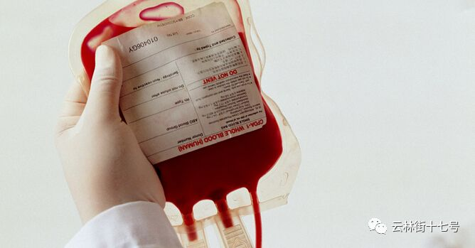

父亲来自黄冈传染病医院病房的最后一个电话：“好的，战斗吧”
原文链接 备份链接 希望大家在关注武汉之余 能把目光和关怀投向同样危急的黄冈接受采访的时候，孙亮哭了。 不到半个月的时间，父母相续感染上新冠肺炎，如今父亲去世、母亲至今仍在ICU。他之所以接受采访，是因为想把真实的情况告知更多的人，希望大 …

输不上血小板，母亲的血象每况日下。一向羞于求人，兢兢业业照顾母亲的小雯开始呼救，「在这样的天灾人祸面前，我妈妈这样的病人，可能成为了不计一切代价中间的‘代价’」。
文 | 徐玮超
（应当事人要求，声音已处理）
跟小雯取得联系是在1月30日晚上。
她的母亲是急性白血病患者，过去两年里一直在武汉大学中南医院就诊。在28号的化验单上，她母亲的血小板数只有15，而正常人是150-300。
血小板数是白血病患者的生命线，如果低于20，患者就需要外输血小板，否则身体将有出血的危险。而一旦发生内出血，生命很难抢救。
因为武汉疫情的变化，武汉大学中南医院的血液科门诊停诊了，住院部也不再收治血液病病人。小雯和父亲询问了武汉各大有血液科的医院，却没有一家可以收治她的母亲，为母亲输上救命血。
管床医生说，唯一的解决办法是，小雯的母亲去发热急诊排查是否有新型肺炎病毒，如果没有，就在急诊病房安排输血。
白血病病人免疫力低下，小感冒都有可能威胁生命。中南医院的发热急诊，做的是新型肺炎病毒的定点试剂盒检测。以小雯母亲的免疫力，在这里就诊，极易发生交叉感染，后果不堪设想。
这个唯一的解决方案，对于自己的母亲来说却是死路一条。
1月31日，刚跟小雯做完采访的晚上，她对我说：“如果我妈妈挺不过去了，这篇报道也不用发出来了”。
以下内容根据小雯的自述整理：
不好的预感
1月23号，早晨9点半，我在手机上接到了武汉市政府发布的封城信息。
离封城还有30分钟。我立刻跟爸妈说，“爸妈，武汉要封城了，咱们得赶紧储备一些粮食。”与此同时，我有预感，“如果这个疫情不能控制住，很可能血源会紧张。”
我本以为母亲春节期间的输血会成问题，可能要排很长的队。但没有想到的是，如今她面对的是没有血小板可输的境地。
1月26日，我母亲的血小板数值还有35。武汉大学中南医院的医生说，如果我母亲血象再恶化，就需要住院输血。等到1月28日，我再次带着母亲去中南医院查血象，母亲的血小板数已经低至15。

检验报告单
我妈妈是血液科的老病人，但因为疫情，中南医院的住院部不再接收血液病病人。值班医生建议我找其他的医院输血。
然后我立马发微信给之前的管床医生，他说医院平诊全部停掉了，急诊现在都在收发热病人。如果我妈妈没有其他情况，建议在家，避免因为免疫力低下而感染病毒。
我跟他说，“你知道我母亲的这种血液情况，她的血小板一直靠输注，不输的话就一直往下掉，很有可能会掉到0，那个时候怎么办？”
医生还是说没有办法，“只能是现在这个样子，你要不就去找其他的医院，要不就先观察。”
他也说，他们血液病病人治了这么长时间，知道我的担心，一旦出血就来不及了。
寻找救命血
回家之后，我不断地联系武汉的其他医院，为我母亲找血小板。
省肿瘤医院，他们没有做定点医院，也没有一例疑似病例，但是医生也直接拒绝。他说，“我们不收血液病”。
同济的医生说，现在这种疫情，资源非常有限，还有血很少，他们原则上已经不收外来的病人了，“我自己的病人都申请不到血，甚至要预约排队很久，我们没有精力和资源再去顾及外来医院的病人了。”

武汉大学中南医院延迟开诊的通知
我联系了省人民医院，中部战区医院，同济，协和，以及他们的其他分院区，还有省肿瘤医院，第九医院，普爱普仁医院。
这些医院的医生回复基本上一模一样：所有的医护人员都去支援疫情了，我们没有医护人员能够在病房里面再收治其他的病种病人。我们没有人了。
我很理解，我母亲是重症，医院也会怀疑我母亲会不会是潜伏期患者，肯定有这种可能性。这两天打电话问了很多医院，医院都有自保的心态。
面对这样的情况，我妈妈什么都没有说，也可能是她不愿意表现出来给我看。有时候我们也会吵架，因为压力太大了。
我妈妈一直感觉，如果她走了，对于我和我爸是一种解脱。她觉得她拖累我太久了。
我是一个很要强的人，所以不喜欢跟别人寻求太多的帮助。向着自己周围的朋友宣泄，说自己家里的情况，这是一种负面情绪。渲染过多，别人就会觉得你像祥林嫂一样在不停的念叨。我不喜欢这个样子。
但我还不愿意放弃。现在虽然血液紧张，可是医院只要能够把我母亲收进去，我妈妈可以不在医院住，输了血小板就走。
在武汉目前的天气里，我可以推我妈妈到露天去输。输一袋血小板就半个小时，可是现在我们没有这个机会。
难言放弃
2年前，我妈妈确诊为MDS eb2。当时医生甚至判断，以我妈妈的血象和化疗的程度，可能挺不过三个月。可是我妈一直挺下来了。
从妈妈发病开始，我和爸爸就知道一定要做好防感染，所以我们家里很早就用紫外灯消毒。只要她的血氧饱和度能够坚持下来，我妈妈24小时佩戴防护型的口罩，睡觉都戴着。 我和我父亲也是一样，这两年在外面从来没有摘下过口罩。
这只是一部分。我妈每天每隔一小时要盐水漱口，三餐以后更是要漱口。不论大小便，全部都要用盐水进行洗漱，就是为了防止口腔和肛周感染。
这些都是我能够了解到的所有防护措施，我们拼尽了全力去注意。
妈妈在中南医院的主治医师，对我们一直特别的好，尽心尽力的救治。他也经常表扬我和父亲对妈妈的看顾。在主治医师和我们的共同努力下，妈妈两年历经多次鬼门关都挺了过来，精神也还不错。

两年来，小雯母亲的收费单
但突然遇到这样的事，我无法相信现实。
你知道吗？就好像自己费了好大的精神去保护的东西，突然一下就被打碎了。而这是被一个意外打碎的，不是因为我没做好。甚至可以说不是因为妈妈的病情进展。
昨天晚上我实在没有办法，又给中南医院的医生打电话。医生知道我母亲是老病人，他说他愿意每天以急诊的方式多帮我妈妈留一袋O型血小板，一旦我妈妈不行了，只要能够送到医院，只要医院能够接收，他就可以在急救时，为我妈妈输上血小板。
我已经到了这一步。
在以往，我妈可以在一个周期性的医疗条件下延续生命。但是在这样的天灾人祸面前，我妈妈这样的病人，可能成为了不计一切代价中间的“代价”。
这两天，我的这个预感越来越强烈了。
（文中“小雯”为化名）
2月1日，白天，稿件正在排版，小雯再次联系了我。
她发在网上的求助信息被中南医院的管床医生看到了，他让她尽快删帖，因为这会对医院“带来负面影响”。
白血病治疗圈的潜规则是首诊负责制，其他医院不收治，去中南医院的发热急诊对妈妈来说也是死路一条，小雯觉得自己快到极限了。
她对我说：“我和妈妈已经走投无路了，这篇稿件一定要发。既然决心赴死，不能不明不白。”
（如果有网友能为小雯提供帮助，欢迎后台留言）

扫码关注我们，记录你的“抗疫故事”。
「我们是谁？」
“云林街十七号”，是一群关注新型肺炎病毒抗疫的纪录片人。云林街是武汉一条普通的街道，正如我们想要记录的普通故事背后的一切。团队成员来自社会学、新闻、电影、纪录片等不同背景，平均年龄不到30岁。
点击阅读原文，报名参与“故事征集”。
原文链接 备份链接 希望大家在关注武汉之余 能把目光和关怀投向同样危急的黄冈接受采访的时候，孙亮哭了。 不到半个月的时间，父母相续感染上新冠肺炎，如今父亲去世、母亲至今仍在ICU。他之所以接受采访，是因为想把真实的情况告知更多的人，希望大 …
原文链接 备份链接 ********** *****那天夜里，从晚上七点，至次日上午八点，她连续接诊200余位输液留观的病人，装备只有一次性外科口罩、帽子、白大褂和手套。**********接诊区患者爆满，病房里床位紧张，设备缺少、防护不 …
原文链接 备份链接 记者/魏晓涵 实习记者/陈威敬 编辑/刘汨 宋建华 孝感市第一人民医院的医生拆下文件袋作为保护面罩 年初三下午5点，王隆和同事在湖北襄阳去往河南新乡的路上，已经连续开了7个小时车。目的地有一家防护服的生产厂，称可以为他 …
原文链接 备份链接 祁立说现在最大的困难，是发热门诊的就诊人数过多。而一线医务工作者最需要的，是能让患者根据规范的指南分级诊疗，减轻发热门诊和隔离病房不必要的压力。整个采访，他没有表达恐慌和焦虑，只希望传递客观、真实、有价值的信息。 记 …
原文链接 备份链接 1月28日下午三时，中国青年报·中国青年网记者实地探访武汉市第五医院输液室。 本文约4534字 预计阅读时间12分钟 中青报·中青网记者 王嘉兴 这是一位坚守在抗击新型肺炎一线医生的自述。她经历了疫情初期所在医院的 …